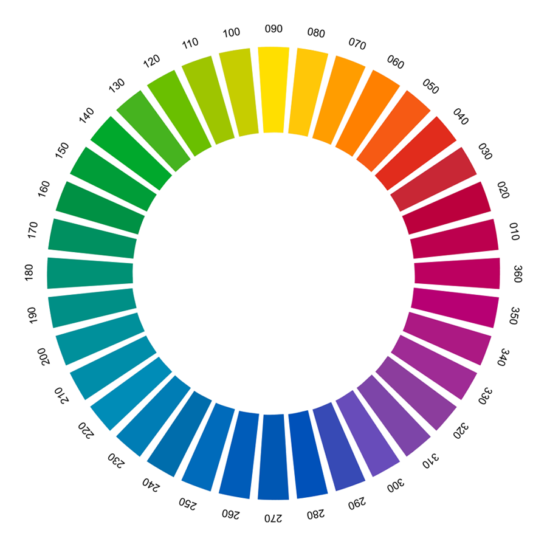

Technical Director at W3C
Strategy lead, Core Web Technologies
Hello!
I’m Chris or @svgeesus
Technical Director at W3C
Strategy lead, Core Web Technologies
Commercial printing, production of paint, plastics, fabric, 3D print
Even with color-managed screens:
sRGB only, 8 bits per component
Chrome, Safari color managed; Firefox threw data at screen
fill: rgb(243, 214, 155);
// looks fine on sRGB,
// too saturated on P3 wide gamut
fill: color(display-p3 0.9341 0.8433 0.6361)
fill: color(prophoto-rgb 0.8474 0.8103 0.5824)
fill: color(rec2020 0.9151 0.8359 0.5960)
// these are the same color, L=87.16 C=38.25 H=79.93

background: lch(50% 0 0);
border-color: lch(65% 30 180 / 50%);
color: lch(55.3% 84.5 10.25, #F06);Hue can be NaN for neutrals
background: lab(50% 0 0);
border-color: lab(65% 46 -8 / 50%);
color: lab(55.3% 83.1 15.0 / 75%, #F06);At-rule (like @font-face) points to ICC profile
@color-profile --fogra39 {
src: url('https://example.org/C_Fogra39L.icc');
}
.header {
background-color: color(--fogra39 0% 70% 20% 0%);
}Not limited to 4 components
@color-profile --fogra55beta {
src: url('https://example.org/FOGRA55beta_CL.icc');
}
.bluish_green {
background-color:
color(--fogra55beta 0.397575 0.010047 0.223682
0.031140 0.000000 0.317066 0.000000);
}Two colors can be mixed in any colorspace; default is LCH
color-mix(teal 65%, olive);Individual components can be mixed
--tomato: lch(52% 58.1 22.7);
--sky: lch(56% 49.1 257.1);
color-mix(var(--tomato) hue 75.23%, var(--sky));Base color, list of alternates
--myAccent: #b22222;
color-contrast(wheat vs tan, sienna, var(--myAccent), #d2691e)WCAG Contrast = (Yb + 0.05) / (Ya + 0.05)
| Color | Luminance | Contrast |
|---|---|---|
| 0.749 | ||
| 0.482 | 1.501 | |
| 0.137 | 4.273 | |
| 0.107 | 5.081 | |
| 0.305 | 2.249 |
Consumer WCG, HDR films, series, news, sports (BT.2100 PQ, HLG)
Consumer HDR gaming consoles
Consumer WCG, HDR-ready TVs commonplace
Consumer WCG (P3) laptops, tablets, phones; HDR coming
WCG, HDR still images coming (AVIF)
Brighter displays for brighter environments
Brighter displays for more highlights